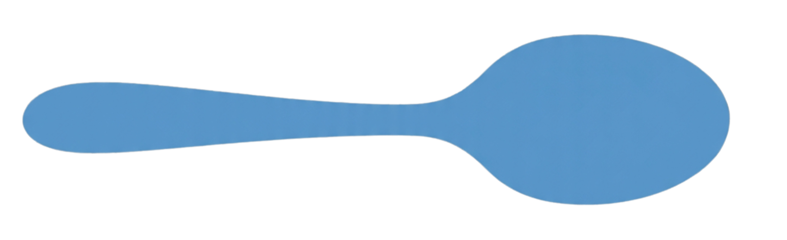

한 번도 책상에 앉을 필요 없는 30일
하루 4페이지 · 약 20분. 출퇴근, 카페, 공원 — 들으면서 따라만 말하면 됩니다.
오늘, 여러분의 프랑스어 한스푼은?

「나의 첫 프랑스어 책 3.0」은 준비 중이에요
하루 4페이지 · 약 20분. 출퇴근, 카페, 공원 — 들으면서 따라만 말하면 됩니다.
어제와 일주일 전의 핵심 표현이 매일의 학습 마지막 1~2분에 다시 등장합니다. 누적 복습이 책 안에 이미 짜여 있어요.
kiffer, ouf, mec/meuf — 파리지앵이 카페와 거리에서 정말 쓰는 말도 함께 담았습니다. (격식·반말 구분 명확)
그날의 장면 도입글
파리의 한 모서리에서 시작20개 표현 분해
발음 · 품사 · 예문 · 연관어뉘앙스 · 문화 · 격식 가이드
"왜 이렇게 말하는가"빈칸 5문제 + ⟲ 누적 복습
어제와 일주일 전이 자동 등장Day 01–05
인사 · 정중함 · 길찾기 · 카페 · 숫자 — 파리에 도착해 살아남는 표현부터.
Day 06–10
빵집 · 레스토랑 · 와인 · 치즈 · 시장 — 미식 도시를 누리기.
Day 11–15
자기소개 · 가족 · 외모 · 연애 · 감정 — 사람을 대하는 말.
Day 16–20
사무실 · 이메일 · 회의 · 재택근무 · 취업 — 업무 환경의 프랑스어.
Day 21–25
행정 · 집 구하기 · 약국 · 쇼핑 · 트러블 — 파리에 사는 사람의 언어.
Day 26–30
연결어 · 의견 · 관용구 · 슬랭 · 총정리 — 외국인이 아니라 그 도시에 사는 사람처럼.
🎧 노션 오디오 컴패니언
Day 01부터 Day 30까지, 60개의 발음 트랙. 한 사람의 일관된 목소리로 녹음했습니다.
"한국어 해설 → 프랑스어 따라 말하기"의 호흡으로 짜여 있어, 출퇴근길 · 산책 · 운전 중에도 책 없이 진도가 나갑니다.
샘플 듣기 (Day 01~02)네. Day 01은 Bonjour부터 시작합니다. 모든 표현에 한국어 해석과 발음 기호(IPA)가 함께 있어요.
가능합니다. 개인 학습용 인쇄는 자유롭게 하셔도 됩니다. (재배포 · 판매 X)
구매 후 보내드리는 PDF 교재 안의 QR 코드를 찍으면 30일 분량 듣기 노션 페이지로 바로 연결돼요. 별도 앱 설치 필요 없음.
PDF 특성상 발송 후 환불은 어렵습니다. 미리 첫 이틀치 샘플 PDF를 받아 보시고 결정하시는 걸 추천드려요.
프랑스어를 처음 시작할 때 가장 막막한 두 가지 — 낯선 발음과 기초 문법. 알파벳 · 자음 · 모음(비음 · 복모음) · 리에종부터 명사 · 관사 · 동사 활용 · 기본 시제까지, 한 권으로 처음의 벽을 함께 넘어요. 모든 핵심 페이지의 원어민 음성으로 따라 말하면서 자연스럽게.
발음 → 어휘 → 문법 → 회화 → 일상 표현 → 어린왕자 읽기. 입문서 · 중급서 · 회화책 · 읽기책을 따로 살 필요 없이, 처음 펼친 날부터 어린왕자 마지막 장을 읽는 날까지 한 권으로 함께합니다.
프랑스어 학습에 더없이 좋은 작품 Le Petit Prince. 30강으로 나뉘어 원어민 음성과 함께 읽고, 표현 노트와 문법 포인트로 한 문단씩 정밀하게 살펴봅니다. 동화 한 권을 프랑스어 원문으로 끝낸 자신감이 손에 남습니다.
발음 기초
알파벳 · 자음 · 모음(비음 · 복모음) · 리에종 · 숫자(1~100 · 큰 수). 모든 소리에 IPA 발음 기호와 원어민 음성.
핵심 어휘
의미별 6그룹 — 사람·관계 / 생활·집 / 자연·세상 / 일·도시·기술 / 일상 활동 / 마음·몸·언어. 각 단어마다 IPA · 뜻 · 예문 · 음성.
문법
기초(명사 · 관사 · 인칭) → 동사 · 문법(현재형 · 기본 동사) → 시제(복합과거 · 반과거 · 미래 · 조건법) → 중급(접속법 · 관계대명사 · 분사). 단계별 학습 + 실전 연습 페이지.
회화 + 일상 표현
A1·A2·B1·B2 레벨별 회화 5개씩 (카페 · 약국 · 면접 · 환경 토론까지) + 06시 기상부터 23시 취침까지의 일상 23 시간대 표현. 모든 대화 음성과 함께.
어린왕자 읽기
원문 + 한국어 번역 + 표현 노트 + 문법 포인트. 각 강마다 원어민 음성 낭독. 단어집은 1부(Ch1~9) / 2부(Ch10~15) / 3부(Ch16~23) / 4부(Ch24~27).
동사 변화
1군(-er) · 2군(-ir) · 3군 불규칙 동사 활용. 외우는 대상이 아니라 자주 쓰는 문장 패턴으로 익히는 동사 변화 — partir, dormir, être, avoir 등. 각 패턴 음성과 함께.
Prononciation
알파벳 → 자음 · 모음 → 리에종 순서로 차근차근.
Phrases + Conversations A1
일상 표현 23개 + A1 회화 5개. 매일 한 시간대씩.
Vocabulaire
30 카테고리. 의미 그룹별로 일주일에 한 카테고리씩.
Grammaire 기초 + 동사 · 문법
명사 · 관사 · 현재형부터 차근차근.
Grammaire 시제 + 중급
복합과거 · 반과거 · 미래 · 조건법 · 접속법.
Lisons
Le Petit Prince 30강 + 단어집 4부.
영역끼리 연결되어 있어, 어휘 페이지에서 바로 해당 표현이 나오는 회화로 이동하거나, 문법 페이지에서 그 문법이 쓰인 어린왕자 장면으로 넘어갈 수 있습니다.
🎧
학습 영역마다 원어민 음성이 함께합니다.
별도 앱 설치 없이 노션 페이지 안의 플레이어로 바로 재생됩니다. 출퇴근길 · 산책 · 운전 중에도 텍스트 없이 듣기만으로 진도가 나갈 수 있어요.
네. 알파벳과 Bonjour부터 시작합니다. 모든 표현에 한국어 해석과 IPA 발음 기호가 함께 있어요.
네. 구매 후 독자님의 노션 계정을 등록하면 일반 웹페이지처럼 바로 이용하실 수 있어요. 별도 가입이나 설정이 필요 없습니다.
네. 노션 모바일 앱에서 모든 음성이 재생됩니다. 데이터 · 와이파이 어디서든.
디지털 콘텐츠 특성상 발송 후 환불은 어렵습니다. 무료 샘플(발음 기초 + 어린왕자 1강)을 먼저 체험하신 후 결정해주세요.
Order Form
양식 작성 후 입금이 확인되면 6시간 안에 보내드릴게요.